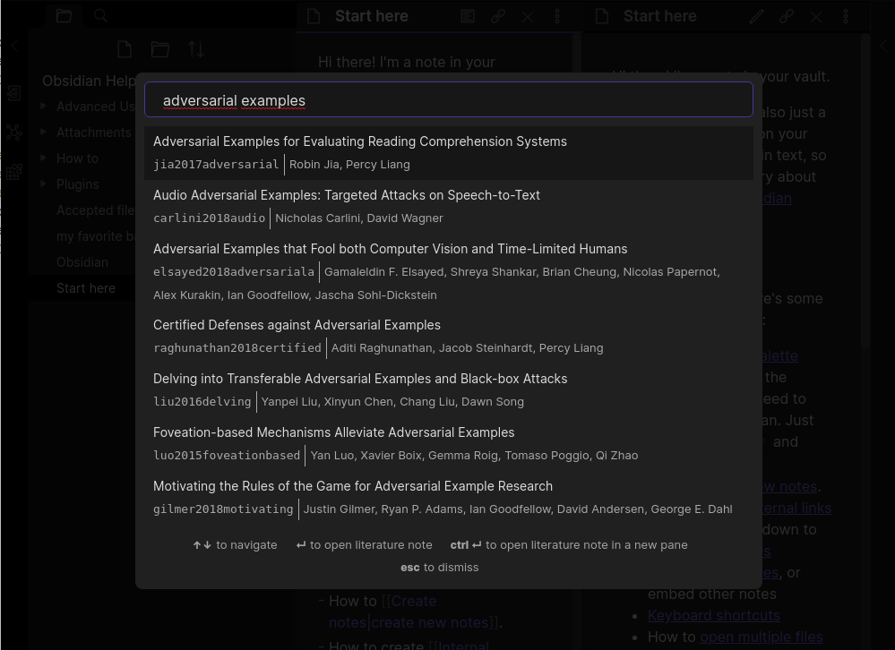

This plugin for Obsidian integrates your academic reference manager with the Obsidian editing experience.

The plugin supports reading bibliographies in BibTeX / BibLaTeX .bib format and CSL-JSON format.
You can install this plugin via the Obsidian "Third-party plugin interface." It requires Obsidian 0.9.20 or higher.
Once the plugin is installed, you must provide it with a bibliography file:
File -> Export library .... Select Better BibLaTeX or Better CSL JSON as the format. (We recommend using the BibLaTeX export unless you experience performance issues. The BibLaTeX format includes more information that you can reference from Obsidian, such as associated PDF attachments, but loads more slowly than the JSON export.)Now open the Obsidian preferences and view the "Citations" tab. Paste the path to the exported file (.bib or .json, depending on the format you chose) in the text field labeled "Citation export path." After closing the settings dialog, you should now be able to search your references from within Obsidian!
The plugin offers three simple features at the moment:
MIT License.
Generated using TypeDoc